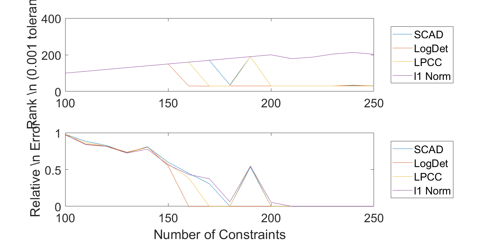
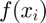
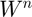
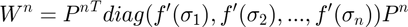
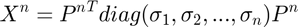
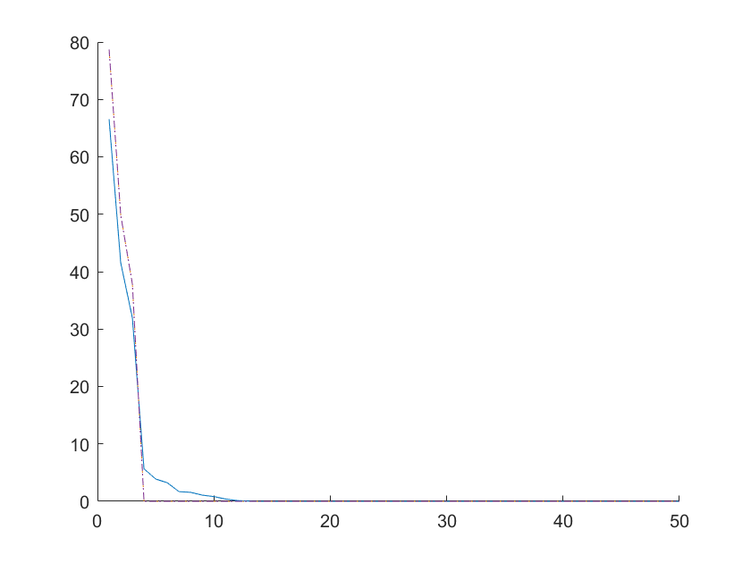
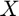
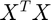
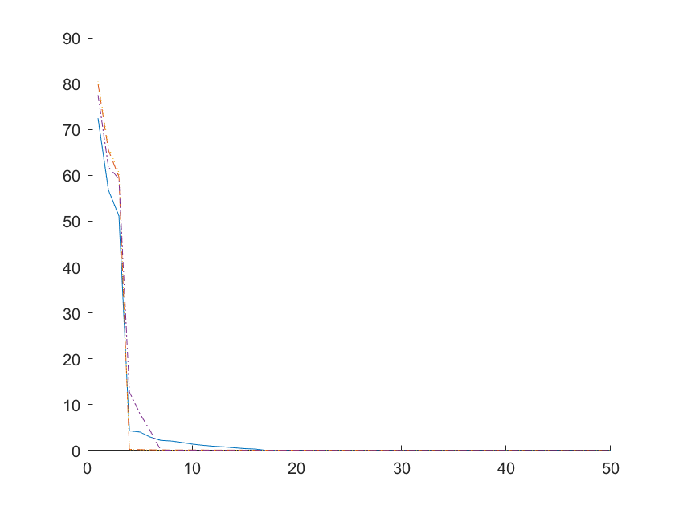

Contents
Sparse Optimization MM Algorithm
I coded a funtion sparseOptimizationMM.m that does an MM algorithm for for any regularizer, so far i have SCAD, LogDet, and the LPCC regularizers programmed for it. The code can acomidate any regularizer with just a couple extra lines of code, and takes the name of the regularizer as input.
Its good code.
m=200;
n=10000;
s=30;
A=(rand(m,n)-0.5)*10;
xSoln=zeros(n,1);
xSoln(datasample(1:n, s))=0.5+rand(s,1)*5;
b=A*xSoln;
[xSCAD,obj]=sparseOptimizationMM(zeros(n,1), A,b, {"SCAD", 0.5,2});
[xLogDet,obj]=sparseOptimizationMM(zeros(n,1), A,b, {"LogDet",0.5 });
[x,obj]=sparseOptimizationMM(zeros(n,1), A,b, {"MR", 0.1});
xL1 = linprog(ones(n,1),[],[],A,b, zeros(n,1), []);
fprintf("SCAD sparsity: %i\n", sum(xSCAD>0));
fprintf("LogDet sparsity: %i\n", sum(xSCAD>0));
fprintf("LPCC sparsity: %i\n", sum(x>0));
fprintf("L1 sparsity: %i\n", sum(xL1>0));
Optimal solution found. Optimal solution found. Optimal solution found. Optimal solution found. Optimal solution found. Optimal solution found. Optimal solution found. SCAD sparsity: 31 LogDet sparsity: 31 LPCC sparsity: 30 L1 sparsity: 99
A comparison of all these methods
n=10000; s=30; spasity=[]; error=[]; mList=100:10:250; if exist("sparse_mm_comparison.mat", 'file')~=2 for i=1:length(mList) m=mList(i); A=(rand(m,n)-0.5)*10; xSoln=zeros(n,1); xSoln(datasample(1:n, s))=rand(s,1)*5; b=A*xSoln; [xSCAD,obj]=sparseOptimizationMM(zeros(n,1), A,b, {"SCAD", 0.075,2.5}); [xLogDet,obj]=sparseOptimizationMM(zeros(n,1), A,b, {"LogDet",0.1 }); [xLPCC,obj]=sparseOptimizationMM(zeros(n,1), A,b, {"MR", 0.1}); xL1 = linprog(ones(n,1),[],[],A,b, zeros(n,1), []); sparity(1,i)= sum(xSCAD~=0); sparity(2,i)= sum(xLogDet~=0); sparity(3,i)= sum(xLPCC~=0); sparity(4,i)= sum(xL1~=0); error(1,i)=norm(xSCAD-xSoln)/norm(xSoln); error(2,i)=norm(xLogDet-xSoln)/norm(xSoln); error(3,i)=norm(xLPCC-xSoln)/norm(xSoln); error(4,i)=norm(xL1-xSoln)/norm(xSoln); end save("sparse_mm_comparison.mat") else load("sparse_mm_comparison.mat") end [rankTable, errorTable]=displayResults(mList, sparity', error', [], {'Number_of_Constraints', 'SCAD', 'LogDet', 'LPCC', 'l1_Norm'});
Rank:
Number_of_Constraints SCAD LogDet LPCC l1_Norm
_____________________ ____ ______ ____ _______
100 100 100 100 100
110 110 110 110 110
120 120 120 120 120
130 130 130 130 130
140 140 140 140 140
150 150 150 150 150
160 160 30 160 160
170 170 29 29 170
180 36 30 30 180
190 190 30 190 190
200 30 30 30 200
210 30 30 30 179
220 30 30 30 187
230 30 30 30 204
240 32 34 30 213
250 31 30 30 203
Error:
Number_of_Constraints SCAD LogDet LPCC l1_Norm
_____________________ __________ __________ __________ __________
100 0.97911 0.98312 0.97314 0.96949
110 0.88399 0.84348 0.86227 0.83899
120 0.82743 0.81978 0.81822 0.8139
130 0.72872 0.73528 0.72703 0.72367
140 0.80924 0.80295 0.80191 0.77673
150 0.60017 0.54888 0.57585 0.56406
160 0.44907 5.8221e-15 0.38312 0.43277
170 0.30794 5.5219e-15 8.5049e-15 0.3747
180 4.537e-14 2.0288e-14 1.678e-14 0.061486
190 0.5334 2.2112e-14 0.55143 0.54732
200 4.9853e-15 5.6221e-15 6.1232e-15 0.054626
210 3.4887e-15 3.2838e-15 4.5218e-15 3.7997e-13
220 6.3622e-15 8.9225e-15 6.9241e-15 1.8984e-13
230 7.0216e-15 1.6784e-14 7.9392e-15 4.1322e-13
240 4.3034e-14 4.0884e-14 1.0467e-14 4.3035e-13
250 6.1237e-14 4.3799e-15 2.3309e-15 2.9297e-13
runTimeTable =
[]
 Extending to PSD Rank Minimization
I now use pretty much the same algorithm for rank mimization. In general, for a regularizer , the weight matrix  is defined as $ Where $
n=50;
r=3;
p=0.2;
rankTol=0.00001;
[D, A, b]=generateMatrixCompletionProblemPSD(n,r,p,0);
[XMR,obj]=rankMinimizationPSDMM(zeros(n,n), [], [], 0, A, b, {"MR",1});
[XlogDet,obj]=rankMinimizationPSDMM(zeros(n,n), [], [], 0, A, b, {"LogDet",1});
[XSCAD,obj]=rankMinimizationPSDMM(zeros(n,n), [], [], 0, A, b, {"SCAD",4,3});
[ Xnuc ] = nuclearNormPSD(zeros(n,n),[],[],0,A,b, []);
fprintf("SCAD rank: %i\n", sum(svd(XSCAD)>rankTol));
fprintf("MR rank: %i\n", sum(svd(XMR)>rankTol));
fprintf("LogDet rank: %i\n", sum(svd(XlogDet)>rankTol));
fprintf("NNM rank: %i\n", sum(svd(Xnuc)>rankTol));
fprintf("SCAD error: %f\n", norm(XSCAD-D,'fro')/norm(D,'fro'));
fprintf("MR error: %f\n", norm(XMR-D,'fro')/norm(D,'fro'));
fprintf("LogDet error: %f\n", norm(XlogDet-D,'fro')/norm(D,'fro'));
fprintf("NNM error: %f\n", norm(Xnuc-D,'fro')/norm(D,'fro'));
figure()
hold on
plot(svd(Xnuc), '-')
plot(svd(XlogDet),'--')
plot(svd(XMR),':')
plot(svd(XSCAD), '-.')
SCAD rank: 3 MR rank: 3 LogDet rank: 3 NNM rank: 13 SCAD error: 0.000000 MR error: 0.000000 LogDet error: 0.000000 NNM error: 0.296228
Nonsymmetric Rank Minimization
Again, not much really changes here. Replace  with  everywhere besides the constraints.
m=100;
n=50;
r=3;
p=0.2;
rankTol=0.1;
X0=zeros(m,n);
[D, A, b]=generateMatrixCompletionProblem(n,m,r,p,0);
[ Xnuc ] = nuclearNorm(X0,[],[],0,A,b, []);
[XMR,obj]=rankMinimizationMM(Xnuc, [], [], 0, A, b, {"MR",3});
[XlogDet,obj]=rankMinimizationMM(Xnuc, [], [], 0, A, b, {"LogDet",3});
[XSCAD,obj]=rankMinimizationMM(Xnuc, [], [], 0, A, b, {"SCAD",2,4});
fprintf("SCAD rank: %i\n", sum(svd(XSCAD)>rankTol));
fprintf("MR rank: %i\n", sum(svd(XMR)>rankTol));
fprintf("LogDet rank: %i\n", sum(svd(XlogDet)>rankTol));
fprintf("NNM rank: %i\n", sum(svd(Xnuc)>rankTol));
fprintf("SCAD error: %f\n", norm(XSCAD-D,'fro')/norm(D,'fro'));
fprintf("MR error: %f\n", norm(XMR-D,'fro')/norm(D,'fro'));
fprintf("LogDet error: %f\n", norm(XlogDet-D,'fro')/norm(D,'fro'));
fprintf("NNM error: %f\n", norm(Xnuc-D,'fro')/norm(D,'fro'));
figure()
hold on
plot(svd(Xnuc), '-')
plot(svd(XlogDet),'--')
plot(svd(XMR),':')
plot(svd(XSCAD), '-.')
SCAD rank: 6 MR rank: 7 LogDet rank: 14 NNM rank: 16 SCAD error: 0.305997 MR error: 0.025429 LogDet error: 0.039695 NNM error: 0.237083
Sparsity Regulated Rank Minimzation
now lets do an MM algorithm that combines both of these. For a surrogate function, we just need to add the surrogate functions for rank and l0. we can mix and match the different regularizers if we want, i suppose.
[D,S, A, b]=generateRobustMatrixCompletionProblem(100,50,5,500,0.7, 0);
[ Xc, Sc ] = sparsityRegulatedRankMinimizationConvex( zeros(100,50), [],[],0, A,b, {0.1});
[ Xmm, Smm ] = sparsityRegulatedRankMinimizationMM( Xc, [],[],0, A,b, {0.1,{'lpcc', 1},{'MR', 0.1}});
sum(sum(abs(full(Sc))>0.00001))
sum(sum(abs(full(Smm))>0.00001))
norm(Xc-D, 'fro')/norm(D,'fro')
norm(Xmm-D, 'fro')/norm(D,'fro')
heatmap(abs(Sc))
figure
heatmap(abs(Smm))
ans =
639
ans =
304
ans =
0.0523
ans =
0.0065
Error using heatmap (line 82) Adding HeatmapChart to axes is not supported. Turn hold off. Error in December11 (line 156) heatmap(abs(Sc))